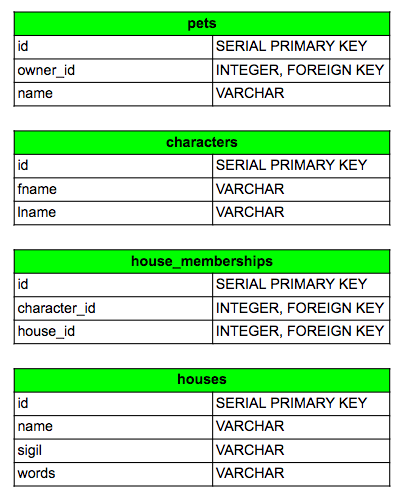

# SQL <img src="http://www.johns-jokes.com/afiles/images/sql-joins-two-tables.jpg" alt="joins"> --- # Lecture Agenda - SQL Overview - Schema - Sql challenges code demo - Quiz --- # Why SQL? - Save and perist data in more permanent storage - Apps usually require rich relationships between stored pieces of data - Relational databases organize, persist, and query that data - 'Structured Query Language', DSL designed for querying data --- # Tables <img src="./houses.png" alt="houses"> --- # Schema 